Reporting vulnerabilities & incidents through the Single Reporting Platform
A walkthrough of the central platform manufacturers will use to report actively exploited vulnerabilities (AEV) and severe incidents, from first-time registration to the final report, with the data fields required at each step.
Status · 10 June 2026 · test portal, fields not yet final. The platform is in test operation. Data fields are not yet final and may change. The portal exclusively serves to fulfil the legal reporting obligation under Article 14 CRA. This reflects the status presented at the CRA Expert Group meeting #5.
- Go-live
- 11 September 2026 (mandatory reporting)
- Voluntary reporting
- Platform supports it after 11 September 2026; statutory date not yet set
- Portal language
- English only, initially
- Users per manufacturer
- Two: a primary and a backup
- Manufacturer-facing API
- Not planned
- Attachments & links
- Not supported
- Built by
- Uni Systems (lead), Wavestone & Luxembourg House of Cybersecurity · €11M, four-year public tender
One continuous, editable notification. The final report is due 14 days after a fix is available (vulnerability) or one month after the 72-hour notification (incident), not from becoming aware.
What “becoming aware” means. You must report an actively exploited vulnerability or a severe incident once you become aware of it (Article 14), and the 24 h / 72 h / final-report clock runs from that point. The Commission’s draft CRA guidance ties this to an initial assessment: when you detect a suspicious event, or a third party flags one, you should assess it promptly, and you are deemed to have become aware only when, after that assessment, you have a reasonable degree of certainty that a vulnerability in your product is being actively exploited, or that a severe incident has occurred and compromised your product’s security.
To keep the test consistent across frameworks, the guidance aligns “becoming aware” with recital 31 of the NIS2 Implementing Regulation (EU) 2024/2690 and the GDPR personal-data-breach guidelines, mirroring the approach used under NIS2 and DORA. There is no explicit duty to actively monitor databases or channels to obtain that knowledge, and active exploitation you were already aware of before 11 September 2026 need not be reported retroactively. Based on the Commission’s draft guidance (not yet adopted); not legal advice.
Registration
There is no pre-registration: you register the first time you need to report. As part of that first submission you sign in with a personal EU Login account and link yourself to a manufacturer. The association is forwarded to your national CSIRT for validation, but you can submit straight away, before that validation completes. It is a one-time setup; afterwards your account is reused for every report.
| Field | Status | Note |
|---|---|---|
| Personal data | ||
| Email address (EU Login) | Mandatory | Personal EU Login account |
| First name | Mandatory | |
| Last name | Mandatory | |
| Country (CSIRT) | Mandatory | For DE: CSIRT Germany |
| Address | Mandatory | |
| Email address (contact) | Mandatory | Need not match the EU Login address |
| Phone number | Mandatory | |
| Manufacturer data | ||
| Manufacturer name | Mandatory | Currently a free-text field |
| Manufacturer CSIRT (Member State) | Mandatory | Determines the responsible national CSIRT |
| Sector | Optional | |
| Registration number | Optional | Meaning not yet defined; not assigned by ENISA (possibly a national ID, e.g. VAT ID for DE) |
| Address (manufacturer) | Optional | |
- 1Open the portal. Live environment will be at crasrp.eu. The portal language is English.
- 2Select user type. As a manufacturer, choose “Assigned Representative”.
- 3Select the national entry point. Set the responsible CSIRT. For a German company, that is “CSIRT Germany”.
- 4Sign in via EU Login. The personal account is later linked to the company as an “Authorized Representative”.
- 5Enter personal data (registration step 1).
- 6Link to manufacturer (step 2). Currently free-text fields; up to two persons per company. The association is provisional and forwarded to the responsible national CSIRT.
- 7Choosing the correct CSIRT is the manufacturer’s responsibility. The portal does not verify this, and is notified first for future reports.
- 8Validation by the CSIRT. The CSIRT verifies the person-to-manufacturer association out of band; the method is decided per country. The status is visible in the user settings.
- 9Ability to report. Successful submission of a report does not depend on successful validation of the account.
- 10Dashboard. After registration the national CSIRT dashboard appears, identifiable by the flag in the top right.
- 11Multiple countries. The same account can be assigned to manufacturers in other Member States by choosing a different national entry point (example: Greece). Validation is then performed by that country’s CSIRT.
Validation, by example of Germany. Validation is deliberately low-key and the method is decided per Member State. For Germany, BSI has indicated it will likely just check the email domain, with no ELSTER certificate required. Other Member States will validate differently. A pending check never blocks submission.
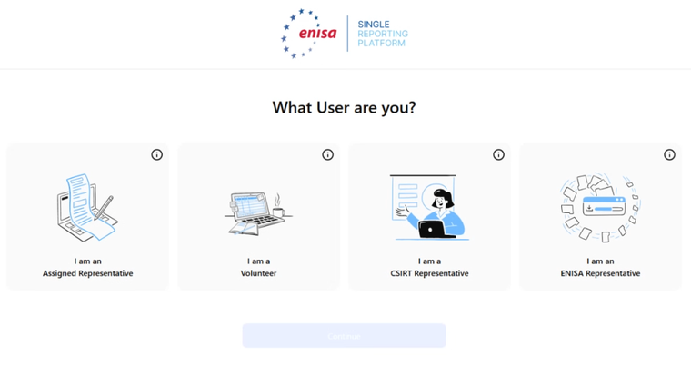
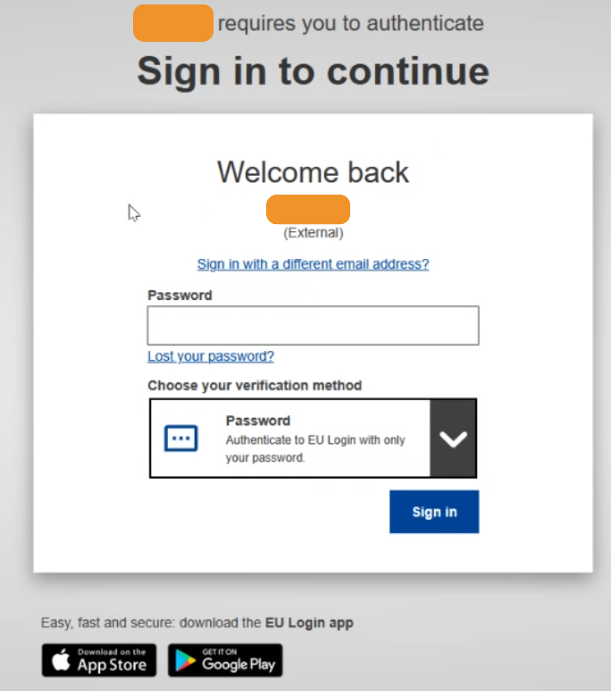
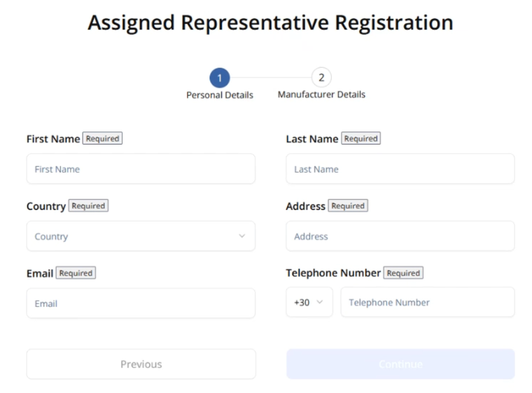
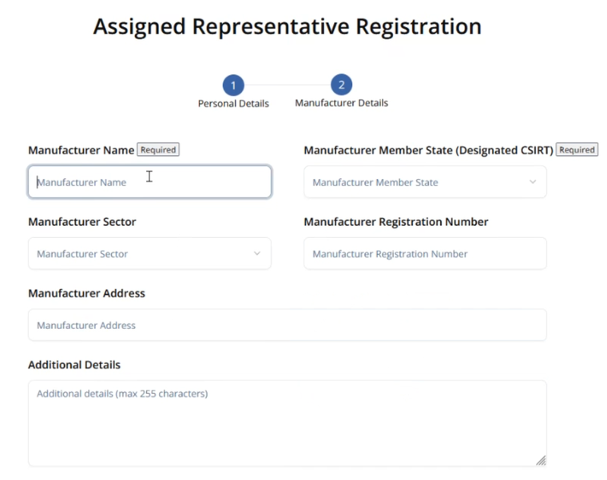
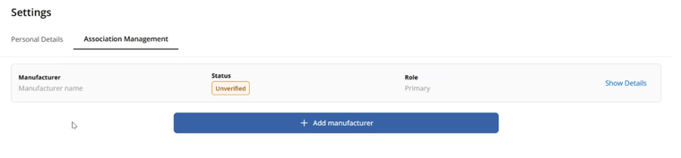
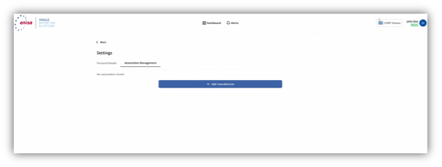
Early Warning
Submitted within 24 hours of becoming aware. You declare whether it is an incident or a vulnerability (the form then shows the matching fields), give it a title and summary, and select the countries of distribution, which determines who else is notified.
| Field | Status | Note |
|---|---|---|
| Notification type (Incident / Vulnerability) | Mandatory | Shows the matching fields for the chosen type |
| Title | Mandatory | |
| Summary | Mandatory | |
| Manufacturer | Mandatory | Additional manufacturers can be added |
| Member States where product is available | Conditional | Determines which further CSIRTs are notified; mandatory if known |
| Incident suspected of unlawful or malicious acts | Mandatory | Incident notifications only; Yes/No flag |
| CVSS score | Optional | |
| Affected product (PwDE) | Optional | Multiple products per notification possible |
| Product version | Optional | |
| Further affected products | Optional | “Add another PwDE” |
| CVE ID / EUVD ID | Optional | If already assigned |
- 1Select notification type. Depending on the choice (Incident or Vulnerability), the matching fields are shown.
- 2Multiple products. If one vulnerability affects several products or versions, they can be captured in a single notification.
- 3Select countries of distribution carefully. This selection determines which additional national CSIRTs are notified.
- 4Save draft. Notifications can be saved as drafts.
- 5Submit. The notification and its status then appear on the dashboard; the national CSIRT receives the Early Warning for review and, where applicable, release.
- 6Editable. After submission, notifications can be adjusted at any time within their current status; the system records all changes.
Deadline reminder. 48 hours after the Early Warning, the dashboard shows an alert that the 72-hour notification is still outstanding. The consequences of a missed 72-hour notification are not yet known.
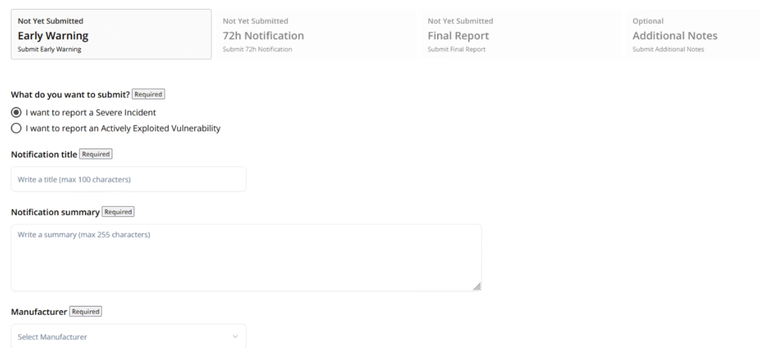
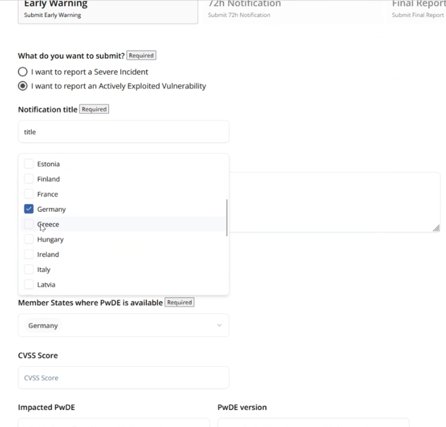
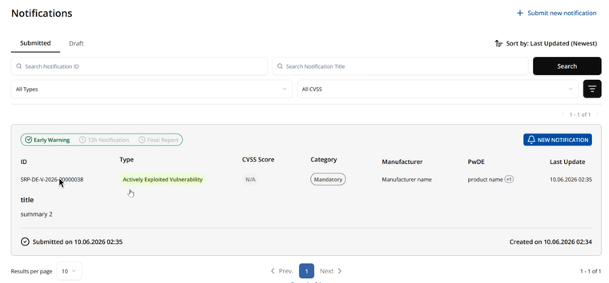
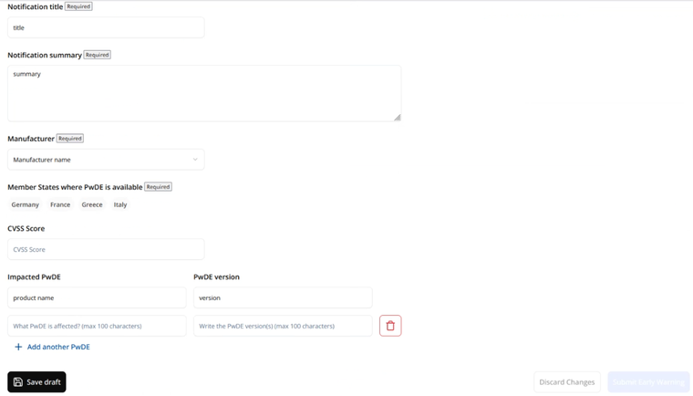
72 h Notification
Added to the same notification, with the general nature of the vulnerability or incident, an initial assessment and the corrective measures taken so far. Here you can also state reasons against onward dissemination.
| Field | Status | Note |
|---|---|---|
| General nature of the vulnerability (AEV) / of the incident | Mandatory | |
| General nature of the exploit (vulnerability) | Mandatory | |
| Corrective or mitigating measures taken | Mandatory | Additional measures can be added |
| Corrective or mitigating measures users can take | Mandatory | |
| Date and time the incident was detected / occurred | Mandatory | Incident notifications only |
| Initial assessment of the incident | Mandatory | Incident notifications only |
| Date when corrective measure has been available | Conditional | Mandatory if available; may not yet be known at 72 h |
| Considered sensitivity of information | Conditional | Mandatory if such information available |
| Circumstances for non-dissemination (PEC) | Optional | Selection list, see below |
| Further relevant information | Optional |
- 1Continue the notification. The 72-hour notification is added in the same way as the Early Warning.
- 2Non-dissemination (optional). The manufacturer can state reasons against forwarding to other national CSIRTs (Particularly Exceptional Circumstances, PEC).
- 3CSIRT review. If reasons are given, the national CSIRT reviews dissemination and may withhold the notification. The legal basis is Delegated Regulation (EU) C(2025) 8407.
- 4Partial information to ENISA. Where the manufacturer marks at least one of the conditions of Article 16(2)(a)–(c) CRA, ENISA only receives partial information until the receiving CSIRT discloses the full notification.
Reasons for non-dissemination (PEC, optional). Particularly exceptional circumstances under which a manufacturer may ask the CSIRT to withhold dissemination:
- actively exploited by a malicious actor;
- exploitation occurred only in the Member State of the responsible CSIRT;
- immediate dissemination would be contrary to essential interests of the Member State;
- the reported vulnerability poses an immediate high cybersecurity risk if disseminated.
Final Report
The closing report: a full description with severity and impact, and details of the corrective measure. For vulnerabilities, no later than 14 days after a fix is available; for severe incidents, within one month of the initial notification. Once submitted, the notification is closed.
| Field | Status | Note |
|---|---|---|
| Detailed description (incl. severity and impact) | Mandatory | Full description of the vulnerability or incident |
| Date when corrective measure has been available | Mandatory | For a vulnerability, the date a fix becomes available starts the 14-day clock |
| Details about the security update / corrective measures | Mandatory | Vulnerability notifications |
| Type of threat or root cause | Mandatory | Incident notifications |
| Applied and ongoing mitigation measures | Mandatory | Incident notifications |
| Malicious actor behind the exploitation | Conditional | Actively exploited vulnerabilities; mandatory if available |
| Additional notes | Optional | Exchange channel with the national CSIRT |
- 1Complete the remaining fields and submit within 14 days (vulnerability) or one month (incident).
- 2Additional notes serve as an exchange channel with the national CSIRT.
- 3Closing. Once the Final Report is submitted, the notification is closed; subsequent changes are no longer possible (confirmation dialog “Are you sure?”).
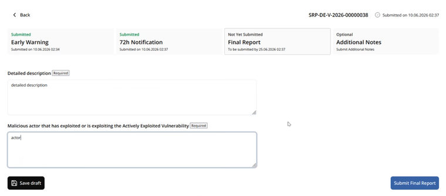
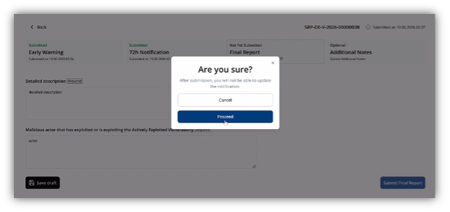
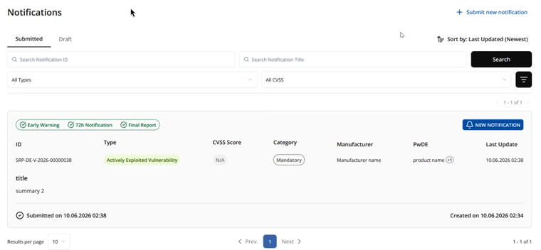
Questions & answers
ENISA's official Single Reporting Platform FAQ, reproduced in full (23 questions). A few answers are amended with unofficial information from the CRA Expert Group demo (meeting 10 June 2026); those questions carry a + unofficial tag, and the added text appears below the official answer under an “Amended with unofficial information” label. References CRA Articles 14–17 and Delegated Regulation C(2025) 8407.
What is the Cyber Resilience Act's Single Reporting Platform (CRA SRP)?+
CRA SRP will be a centralized electronic system designed to simplify reporting obligations for manufacturers and open-source software stewards. It will serve as a “single entry point,” allowing manufacturers to report actively exploited vulnerabilities and severe incidents only once, rather than notifying multiple national authorities individually.
Manufacturers will submit notifications electronically, selecting the CSIRT designated as coordinator (based on the manufacturer's main establishment location per CRA Article 14(7)) and ENISA simultaneously. The CSIRT will then disseminate information without delay to other relevant CSIRTs in Member States where the product is available, and to market surveillance authorities as needed.
What is the legal basis for CRA SRP?+
The legal basis is the Cyber Resilience Act (CRA), Article 16(1): “For the purposes of the notifications referred to in Article 14(1) and (3) and Article 15(1) and (2) and in order to simplify the reporting obligations of manufacturers, a single reporting platform shall be established by ENISA.”
The architecture of the single reporting platform shall allow Member States and ENISA to put in place their own electronic notification end-points.
Articles 14–17 of the CRA provide details of the ecosystem for reporting vulnerabilities. In December 2025, the European Commission published a Delegated Regulation specifying conditions for delaying dissemination of notifications.
Who is responsible for establishing and managing the platform?+
ENISA is tasked with establishing, managing, and maintaining the day-to-day operations of the CRA SRP. ENISA must ensure the platform's security and implement appropriate technical and organizational measures to protect submitted information.
When will the Single Reporting Platform be operational?+
The platform is scheduled to be operational by 11 September 2026. This coincides with when mandatory reporting obligations for manufacturers officially enter into application (Article 14 of the Cyber Resilience Act). A testing period is expected before this date.
What must be reported via the platform?+
Under CRA, manufacturers will be obliged to notify two specific types of occurrences:
- Actively Exploited Vulnerabilities: vulnerabilities in products with digital elements for which there is reliable evidence they have been exploited by a malicious actor.
- Severe Incidents: incidents that have a severe impact on the security of the product with digital elements (compromising availability, authenticity, integrity, or confidentiality); criteria for severity are defined in Article 14(5).
Open-source software stewards are subject to reporting obligations to the extent they are involved with products with digital elements, as per Article 24(3) of CRA.
What else can be reported in the platform?+
The platform will offer functionality for voluntary reporting after 11 September 2026. Any natural or legal person may voluntarily notify:
- Vulnerabilities contained in a product with digital elements
- Cyber threats that could affect the risk profile of a product with digital elements
- Incidents having an impact on the security of a product
- Near misses that could have resulted in an incident
What are the deadlines for reporting?+
The reporting process starts when a manufacturer becomes aware of active exploitation of a vulnerability or incident.
“Actively exploited vulnerability” means a vulnerability for which there is reliable evidence that a malicious actor has exploited it in a system without permission of the system owner (CRA definition).
“Incident having an impact on the security of the product with digital elements” means an incident that negatively affects or is capable of negatively affecting the ability of a product with digital elements to protect the availability, authenticity, integrity or confidentiality of data or functions (CRA definition).
Manufacturers and open-source software stewards must adhere to specific deadlines:
- Early Warning: without undue delay and in any case within 24 hours of becoming aware.
- Vulnerability/Incident Notification: without undue delay and in any case within 72 hours of becoming aware, providing general information and an initial assessment.
- Final Report, for vulnerabilities: no later than 14 days after a corrective measure (e.g., patch) is available; for severe incidents: within 1 month after the initial notification.
How does the Single Reporting Platform operate?+
Manufacturers submit notifications electronically through the platform, which automatically routes them to the designated CSIRT coordinator (based on manufacturer's main establishment) and ENISA simultaneously. The CSIRT then disseminates information without delay to other relevant CSIRTs in Member States where the product is available, and to market surveillance authorities as needed. For sensitive reports, dissemination may be delayed on security grounds.
How will the platform be accessible and how will the registration process work?+ unofficial+
Specific manuals and instructions will be provided by ENISA in the course of June 2026.
In practice (from the Expert Group demo): authorization works on a good-faith model at first: you sign in via EU Login, claim to represent a manufacturer, and can submit immediately. The designated CSIRT validates the association afterwards, out of band; the method is decided per country and a pending validation never blocks submission. Only two users are allowed per manufacturer: a primary and a backup.
Validation is deliberately low-key. For Germany, BSI has indicated it will likely just check the email domain, with no ELSTER certificate required; other Member States will validate differently, so this should not be generalised.
The portal will be English only, at least initially, and does not support attachments or links; where more detail is needed, CSIRTs follow up directly.
Where can I get further information on the application of the CRA?+
The European Commission has set up a document “FAQs on the CRA Implementation,” which specifies more details related to reporting obligations in section 5. The Commission has also published a draft Communication intended to provide guidance on CRA application, including section 9.1 on reporting obligations. A final version of the Communication will be adopted shortly.
How is the term “actively exploited vulnerability” interpreted in practice?+
The European Commission explains this term in subsection 5.1 of its “FAQs on the CRA Implementation” alongside other information related to the legal interpretation of CRA.
Do I need to report a vulnerability discovered in products made available before the entry into force of the CRA?+
Refer to the European Commission's “FAQs on the CRA Implementation,” particularly subsection 5.3: “Does a manufacturer need to report actively exploited vulnerabilities or severe incidents for products placed on the market before the CRA applies?”
Do I need to report vulnerabilities that have been actively exploited before the CRA applies?+
The manufacturer's obligation to report actively exploited vulnerabilities applies once they become aware of them. The obligation does not extend to reporting vulnerabilities of which the manufacturer was already aware before the CRA reporting obligation applies.
If a vulnerability in my product has its source in a third-party component, am I still obliged to notify it?+
Refer to the European Commission's FAQ in section 5.4: “If an actively exploited vulnerability is contained in a third-party component, are all manufacturers integrating that component required to notify it?”
Can the notification workflow be automated for large numbers of notifications from one manufacturer?+ unofficial+
Organisations might automate reporting workflows and integrate reporting requirements into their systems and databases; however, no Application Programming Interfaces will be provided at this stage.
From the Expert Group demo: an API for integration with national platforms is planned, but submissions to the SRP are made manually. ENISA's stated view is that even the highest-volume company does not see enough actively exploited vulnerabilities to justify an automated submission API. It was also mentioned that it is hard to write secure APIs and that automatic submissions are not in scope of the CRA and therefore not in scope for the SRP. Data export from the platform is also not currently foreseen.
What are the data fields to be filled in the reporting template?+
Fields are classified as:
- X: obligatory
- C: by default copied from previous step, or updated
- A: automated (not visible for the submitter)
- O: optional
- I: obligatory if such information is available
Codes below show the value at each step (24 h / 72 h / Final).
Common fields
- Notification type (Vulnerability/Incident): X / C / C
- Notification level (24h/72h/Final): X / X / X
- Reporting time – 24h: A / A / A
- Reporting time – 72h: A / A / A
- Reporting time – Final: A / A / A
- Reporter: A / A / A
- Name of manufacturer or open-source software steward: X / C / C
- Product: X / C / C
- Product Type (Default/Important/Critical): O / C / C
- Product Category (if Product Type other than Default – CRA Annex III/IV): O / C / C
- Member States where product available: I / C / C
- Title: X / C / C
Vulnerability fields
- CVE ID: O / C / C
- EUVD ID: O / C / C
- General information: O / X / C
- General nature of the vulnerability: O / X / C
- General nature of the exploit: O / X / C
- Corrective or mitigating measures taken: O / X / C
- Corrective or mitigating measures that users can take: O / X / C
- Considered sensitivity of information: O / I / C
- Date when corrective or mitigating measure has been available: O / O / X
- Full description of the vulnerability (incl. severity and impact): O / O / X
- Severity of the vulnerability: O / O / X
- Impact of the vulnerability: O / O / X
- Malicious actor that has exploited / is exploiting the vulnerability: O / O / I
- Details about the security update / corrective measures available: O / O / X
Incident fields
- Incident is suspected by unlawful or malicious acts: X / C / C
- General information about the nature of the incident: O / X / C
- Date and time when the incident was detected: O / X / C
- Date and time when the incident occurred: O / X / C
- Initial assessment of the incident: O / X / C
- Corrective or mitigating measures taken: O / X / C
- Corrective or mitigating measures that users can take: O / X / C
- Considered sensitivity of information: O / I / C
- Severity of the incident: O / O / X
- Severity criteria (affects availability/authenticity/integrity/confidentiality; introduction or execution of malicious code): O / O / X
- Impact of the incident: O / O / X
- Type of threat or root cause likely to have triggered the incident: O / O / X
- Applied and ongoing mitigation measures: O / O / X
Will any trainings be provided for the relevant parties?+
ENISA recognises the need for sufficient preparation time to train all relevant contributors and reporting teams prior to the compliance deadline. Information that will support training and dry-run exercises will be available within the month of June.
How do I know what is the national CSIRT to which I should report through the CRA SRP?+ unofficial+
The national CSIRT to which you should report is essentially determined by your main location of establishment (or of the establishment of your authorised representative, if you are not established in the EU). CRA Article 14(7) provides detailed information. Additional information (list of national CSIRTs designated as coordinators) will be provided by ENISA at a later stage.
From the Expert Group demo: the platform will never suggest which CSIRT to choose. That choice, and its correctness, is the manufacturer's responsibility.
What are the responsibilities of key entities involved with the CRA SRP?+
- Manufacturers: submit timely notifications and comply with other obligations established by the CRA.
- Open-source software stewards: submit timely notifications to the extent involved with products with digital elements, as per Article 24(3).
- ENISA: manages the platform, processes reports, prepares biennial trend reports (first due within 24 months of reporting obligations starting), operates a helpdesk (especially for SMEs), and discloses fixed vulnerabilities to the European Vulnerability Database.
- CSIRTs Designated as Coordinators: receive and assess reports, decide on dissemination delays, inform market surveillance authorities and the public if necessary, and provide helpdesk support alongside ENISA.
- European Commission: adopts delegated and implementing acts (e.g., for delay criteria and report formats), evaluates the platform's effectiveness, and supports coordination of enforcement activities.
- Market Surveillance Authorities: receive disseminated information and enforce compliance, such as through investigations or corrective actions.
Who receives the reports submitted to the platform?+
As a general rule, when a manufacturer submits a report to the CRA SRP, it is simultaneously notified to:
- The CSIRT designated as the coordinator in the Member State where the manufacturer is established.
- ENISA (unless particularly exceptional circumstances apply).
The CSIRT designated as coordinator that initially receives the notification is then responsible for disseminating it without delay to other relevant CSIRTs across the EU via the platform.
Can the dissemination of a report be delayed or withheld?+
Yes. In exceptional circumstances, the receiving CSIRT may decide to delay or withhold the dissemination of a notification to other Member States. This is strictly limited to cases where immediate dissemination is justified on security related grounds (if spreading information would pose an even greater security risk).
The European Commission adopted a delegated act on 11 December 2025 to further specify the terms and conditions for applying these grounds.
In particularly exceptional circumstances, ENISA will not receive the full content of the 72-hour notification. This is only the case where, in the 72-hour notification, the manufacturer actively marks that at least one of the conditions listed in points (a) to (c) of Article 16(2) applies. In such case, ENISA only receives partial information, until the receiving CSIRT discloses the full notification.
How does the platform ensure security?+
ENISA is legally required to take appropriate measures to manage risks to the platform's security and must notify the CSIRTs Network and the Commission of any security incidents affecting the platform itself. Before its launch, the platform will be subject to user and security testing, to ensure its reliability. It will also be periodically re-checked.
How is the CSIRTs network involved?+
As provided in CRA Article 16, ENISA is engaging the CSIRTs Network in development and future testing of the CRA SRP.